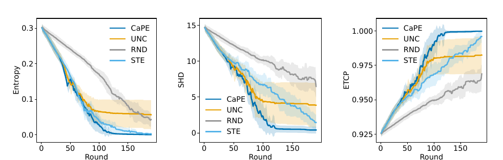
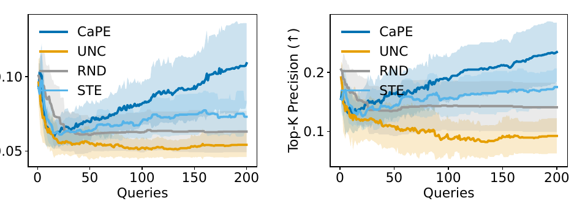

CaPE at a glance
Why causal structures matter and how CaPE uses expert time where it counts.
How CaPE works
Observational data often narrow down which variables are linked, but leave the direction of many links open. Experts can settle those links, but their time is scarce and their judgements are not perfect. CaPE spends each question where it will reduce uncertainty about the whole graph the most.
-
1
Start from the data
Take samples from any observational posterior over causal graphs: bootstrap, MCMC, variational or a GFlowNet. CaPE holds them as weighted particles.
-
2
Choose the question
Score each pair of variables by the expected information gain of the expert’s answer. It is high where the candidate graphs confidently disagree.
-
3
Ask the expert
The expert says whether A causes B, B causes A, or neither. A three-way likelihood models how reliable and decisive their answers are.
-
4
Update the belief
Reweight the particles by the answer, resample when a few dominate, and rejuvenate with small MCMC moves to keep the set diverse.
Repeat until the question budget is spent. Under non-adversarial feedback, the posterior provably concentrates on the true graph, up to what the data can identify.
Results
For a protein-signalling problem from human immune cells, there are more than 1022 possible cause-and-effect networks. With just twenty expert questions, CaPE more than doubled the accuracy of the causal directions.
Sachs observational-only benchmark: 11 variables, 853 samples, 17-edge reference network. Orientation F1 rose from 0.22 to 0.50 after 20 queries and to 0.60 after 40. Expert answers were simulated from the reference network. Means over 10 runs (Table 3 of the paper).
Synthetic graphs

Human gene perturbations

Get started
The code reproduces every experiment in the paper with one command. CaPE works with posterior samples from any causal discovery method, so you can plug in your own.
See the README for the repository layout and experiment entry points, and REPRODUCIBILITY.md for details. Released under the Apache 2.0 licence.
# clone and set up
git clone https://github.com/csiro-funml/CaPE.git
cd CaPE
python -m venv .venv
source .venv/bin/activate
pip install -r requirements.txt
# reproduce the paper
./reproduce_paper.sh
# or run one experiment
python experiments/run_sachs_hitl.pyCite CaPE
@InProceedings{pmlr-v306-bonilla26a,
title = {Causal Preference Elicitation},
author = {Bonilla, Edwin V. and Zhao, He and Steinberg, Daniel M.},
booktitle = {Proceedings of the 43rd International Conference on Machine Learning},
pages = {9094--9128},
year = {2026},
editor = {Zhang, Tong and Dudik, Miroslav and Jaggi, Martin and Agarwal, Alekh and Li, Sharon and Schuurmans, Dale and Zhu, Jerry and Berkenkamp, Felix and Dong, Hanze and Bietti, Alberto},
volume = {306},
series = {Proceedings of Machine Learning Research},
month = {06--11 Jul},
publisher = {PMLR},
pdf = {https://raw.githubusercontent.com/mlresearch/v306/main/assets/bonilla26a/bonilla26a.pdf},
url = {https://proceedings.mlr.press/v306/bonilla26a.html},
abstract = {We propose causal preference elicitation, a Bayesian framework for expert-in-the-loop causal discovery that actively queries local edge relations to concentrate a posterior over directed acyclic graphs (DAGs). From any black-box observational posterior, we model noisy expert judgments with a three-way likelihood over edge existence and direction. Posterior inference uses a flexible particle approximation, and queries are selected by an efficient expected information gain criterion on the expert’s categorical response. Experiments on synthetic graphs, protein signaling data, and a human gene perturbation benchmark show faster posterior concentration and improved recovery of directed effects under tight query budgets.}
}